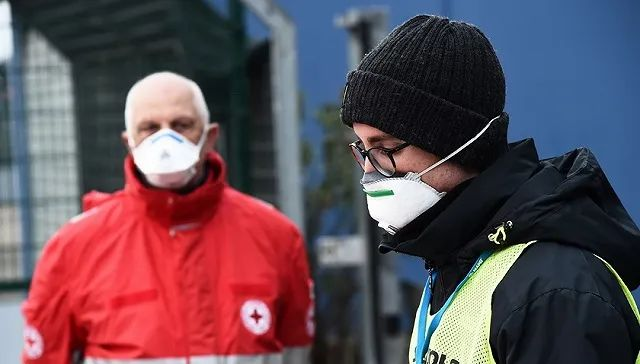
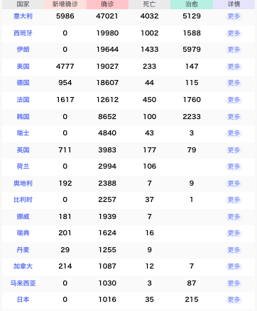

意大利陆军总参谋长确诊，瑞士让轻症患者在家隔离
原文链接 备份链接 图片来源：Kyoto News “ 全球新冠肺炎疫情播报，持续更新。 ” 全球 0800【全球疫情汇总】 据新浪实时统计，截至3月9日8点，除中国（包括港澳台地区）以外，海外新冠肺炎累计确诊28854例，死亡702例， …

图片来源：IC Photo
“
全球新冠肺炎疫情播报，持续更新。
”
（本文持续更新中。点击左下角阅读原文，实时跟踪国际疫情动态。文中段首所示时间为本文更新时间。）
0800【全球疫情汇总】
据新浪实时统计，截至3月21日8点，除中国（包括港澳台地区）以外，海外新冠肺炎累计确诊188053例，死亡7946例，治愈18519例。

注：新增0表示当天暂未宣布数据。数据来源：新浪
0800【全球新冠肺炎确诊病例超25万，死亡10389人】
美国约翰斯·霍普金斯大学发布的实时统计数据显示，截至北京时间3月20日23时35分，全球新冠肺炎确诊病例达250856例，超25万。死亡病例累计10389人。
除中国外已有6个国家确诊数过万。意大利累计确诊41035例，西班牙19980，伊朗19644，德国16290，美国14250，法国10891。为遏制新冠肺炎疫情，印度、波兰、加拿大等至少18个国家已宣布关闭国境，意大利等6个国家全国“封城”。
0800【国际油价20日大幅下跌，纽商所油价重挫11%】
截至当天收盘，纽约商品交易所4月交货的轻质原油期货价格下跌2.79美元，收于每桶22.43美元，跌幅为11.06%。5月交货的伦敦布伦特原油期货价格下跌1.49美元，收于每桶26.98美元，跌幅为5.23%。
0800【国际奥委会主席巴赫：取消东京奥运会不在议程上】
决定东京奥运会最终命运的决策权掌握在国际奥委会手中，而取代如期举行的选项总共是3个，取消、延期和空场举行。取消奥运会是外界最不希望看到的结果，这不仅是对各种资源的浪费，也将留下一个非常糟糕的先例。而运动员的影响力和心态也可能发生变化。另外，各项目的国际团体也将无法分到资金。
0800【纽约股市三大股指20日大幅下跌】
截至当天收盘，道琼斯工业平均指数下跌913.21点，收于19173.98点，跌幅为4.55%。标准普尔500种股票指数下跌104.47点，收于2304.92点，跌幅为4.34%。纳斯达克综合指数下跌271.06点，收于6879.52点，跌幅为3.79%。
0800【美国已有4个州宣布居家隔离，影响7500万人】
美国伊利诺伊州和康涅狄格州20日分别宣布全州居民居家隔离，要求非必要岗位的人员都待在家中不要出门。目前，包括加州和纽约州，美国已经有4个州先后发布了“居家隔离令”，影响到7500万人，即美国人口的近四分之一。
0800【美国新增4776例确诊病例，累计确诊19027例】
据美国疾病控制和预防中心以及各州公共卫生部门的统计，截至美国东部时间3月20日晚6点，全美已报告新冠肺炎确诊病例19027例，死亡233例，治愈147例。其中，3月20日新确诊4776例。
0800【蓬佩奥：美国将“竭尽所能”安排海外美国公民回国】
美国运输安全管理局周五表示，纽约和亚特兰大机场新增2例地勤员工确诊感染新冠病毒。至此，美国运输安全管理局已在员工中发现14例新冠肺炎确诊病例。
0800【美国副总统办公室一职员新冠病毒检测呈阳性】
美国副总统彭斯发言人20日说，副总统办公室一名职员新冠病毒检测结果呈阳性，该职员未同总统特朗普或彭斯有密切接触。
0800【美国总统特朗普女儿伊万卡新冠病毒检测阴性】
现在，她已返回工作岗位。
0800【美国首都出现首例新冠肺炎死亡病例】
死者为一名59岁的男性，他在出现发烧和咳嗽症状后，于上周住进医院。据悉，该患者除了新冠病毒检测呈阳性外，身体也存在潜在的健康问题。
0800【特朗普说未考虑发布全美范围“居家令”】
特朗普在白宫记者会上回答提问时说，他不认为发布全美范围的“居家令”有必要，因为一些地区疫情并不严重。
0800【加拿大新冠肺炎确诊病例突破1000，死亡12例】
根据各省公布的数字，加拿大已有1087例确诊和初诊病例，死亡12例。
0800【意大利累计新冠肺炎确诊病例增至47021例】
意大利民事保护部门负责人、新冠病毒应急委员会专员博雷利20日说，截至当天18时，意大利累计新冠肺炎确诊病例升至47021例，病亡者增至4032人，另有5129人治愈。该部门统计数据显示，意大利累计确诊病例比上一日增加5986例，累计死亡病例比上一日增加627例，累计治愈病例比上一日增加689例。
0800【英国政府宣布关闭酒吧餐厅】
英国首相约翰逊在20日正式宣布，关闭全英国的酒吧、咖啡馆、餐厅、影剧院等公众场所。为保证疫情期间的食物供给，餐厅外卖可以继续经营。约翰逊要求此项禁令当晚执行，同时警告英国民众，晚上不要出门。此项关闭禁令将每月重审一次，评估是否需要继续执行。
0800【英国新冠肺炎确诊者新增714人累计确诊3983人】
英国财政大臣瑞希·苏纳克宣布，为了帮助企业克服难关，维护就业，所有企业免交今年第二季度增值税。那些无法支付员工工资的企业，政府将利用专项资金帮助支付工资，每个员工最多可获得当月工资的80%、每月最多不超过2500英镑的工资，这种在紧急状态下对企业的扶持政策是英国历史上从未有过的。
0800【法国新增新冠肺炎1617例，累计确诊12612例】
法国卫生部宣布，法国新冠肺炎患者较昨日新增1617例，累计确诊共12612例，其中入院治疗5226例，重症1297例，死亡450例，治愈1587例。法国迄今已做5万余例检测。法国临床发现年轻患者少量出现无鼻塞情况下丧失嗅觉甚至味觉的新症状。
0800【确诊病例突破2万，西班牙医疗资源短缺】
西班牙广播电视台(RTVE)统计显示，该国新冠肺炎确诊人数上升至20410人，其中1041人死亡，1588人治愈。在过去的24小时内，警方逮捕的不遵守安全警告的人越来越多。
0800【外媒：中国球员武磊在西班牙确诊感染新冠病毒】
根据西班牙当地媒体当地时间20日下午的消息，目前效力于西甲西班牙人的中国球员武磊确诊感染新冠病毒。此前，西班牙人俱乐部在官网上宣布，有6位一线队成员确诊感染新冠病毒，其中有4位球员。
0800【波兰宣布进入疫情紧急状态进一步加强隔离措施】
进入疫情紧急状态后，波兰政府据此可进一步禁止部分活动，限制国内人员流动，同时可在疫情严重地区建立封锁区，乃至封城。同时，波兰卫生部和各省省督可征调、指派医务人员及其他人员投入疫情防控工作。波兰学校进一步停课到4月12日复活节。
0800【乌克兰宣布基辅市及两个州进入紧急状态】
政府决定基辅市以及聂伯罗彼得罗夫斯克州、伊万诺-弗兰科夫斯克州两个州进入紧急状态。
0800【德国新冠肺炎确诊病例累计达18607例】
0800【中领馆：5名中国学生在德国当地学校新冠检测结果阳性】
中国驻法兰克福总领馆：某语言学校18名学生检测结果为阳性，其中5名为中国籍学生。确诊的中国籍学生目前均为轻症或无症状，根据德方相关处置流程仍须留在学校隔离观察。
0800【瑞典新冠病毒感染者增至1623例累计死亡16例】
0800【丹麦新增104例新冠肺炎确诊病例额累计1255例】
0800【挪威新增181例新冠肺炎确诊病例累计确诊1939例】
0800【荷兰新增534例新冠肺炎确诊病例累计2994例】
0800【立陶宛新增22例新冠肺炎确诊病例累计确诊63例】
0800【芬兰新增50例新冠肺炎确诊病例累计450例】
0800【冰岛新增79例新冠肺炎确诊病例累计409例】
0800【奥地利新增375例新冠肺炎确诊病例累计2388例】
0800【爱尔兰新增126例新冠肺炎确诊病例累计683例】
0800【保加利亚新增17例新冠肺炎感染者累计确诊127例】
0800【意大利改造轮船医院交付使用拥有400张床位】
主要用于收治新冠病毒感染者和已经临床治愈出院，但还需要隔离观察一段时间才能回家的患者。目前该船可立即收治25名患者。
0800【俄罗斯举行防疫新冠病毒特别演习】
3月20日，俄罗斯国防部长绍伊古向媒体表示，为了抗击新冠病毒，3月18日至19日，俄罗斯辐射、化学和生物防护部队在莫斯科契卡洛夫斯基机场举行了特别演习。
0800【俄累计感染新冠病毒病人数超200 正测试6种疫苗】
俄利用最新生物技术在2个月内开发出6种抗新冠病毒疫苗。目前正在对这些疫苗进行测试，希望其安全性和效果可以获得证实。
0800【尼泊尔总理宣布“封国”】
尼泊尔总理奥利20日晚间发表全国电视讲话，宣布从3月22日至31日，禁止所有国际航班进入尼泊尔。如无特殊必要，民众应尽量待在家里，且不允许尼泊尔国民出国旅行。政府计划关闭所有境内机场并在所有边境口岸增加健康检查站点。
0800【莫迪：印度将于22日在全国实施“公共宵禁”】
截至21日零时，印度卫生部门共报告确诊病例223例，死亡4例。
0800【印尼雅加达宣布进入紧急状态为期两周】
0800【东南亚：炎热难止疫情，防疫普遍升级】
指望气温升高遏制新冠病毒还为时过早，“天热新冠病毒自灭”的说法也有待研究。东南亚国家正逐渐升级包括“锁国”在内的各种防疫措施。
0800【布基纳法索外长被确诊为新冠肺炎患者】
布基纳法索外长巴里在社交媒体上发布消息，承认自己患上新冠肺炎。稍早前官方统计说，包括该国教育部长在内的33名患者确诊感染新冠肺炎。
0800【津巴布韦确诊首例新冠肺炎病例】
被确诊患者是一名38岁的男性，居住在维多利亚瀑布城，曾于今年3月7日前往英国曼彻斯特，于15日经南非返回维多利亚瀑布城。
0800【摩洛哥将关闭所有国际机场】
摩洛哥拉巴特-塞勒国际机场于19日关闭，其他摩洛哥国际机场也将于本周内陆续关闭。摩洛哥于15日宣布暂时停飞所有国际航班，随后宣布将与相应国家协商，安排特别航班帮助滞留游客回国。在21日最后一架航班离境后，摩洛哥将于当晚正式对外关闭其空域。
0800【摩洛哥新冠肺炎确诊病例总数达到79例】
摩洛哥新冠肺炎疑似病例增加到385例。目前死亡3例，康复2例。
0800【以色列出现首例新冠肺炎死亡病例】
以色列卫生部20日说，死者是一名88岁男性，当晚因新冠肺炎引发严重并发症死亡。根据以色列卫生部当天发布的数据，该国当天新增新冠肺炎确诊病例28例，累计确诊病例升至705例，其中15例治愈出院。
0800【伊拉克新增15例新冠肺炎确诊病例】
0800【土耳其新增311例新冠肺炎确诊病例累计确诊670例】
0800【阿联酋累计确诊新冠肺炎140例死亡2例】
当地时间3月20日晚，阿联酋卫生和预防部宣布，该国首次出现新冠肺炎死亡病例2例。其中一位新冠肺炎患者为阿拉伯国籍，78岁，来自欧洲，生前患有心脏病并发症；另一位患者来自亚洲某国，58岁，生前患有心脏病、肾衰竭等多种慢性疾病。
0800【约旦新增16例新冠肺炎确诊病例累计确诊86例】
0800【巴西进入公共灾难状态】
巴西国会参议院20日通过巴西政府提交的有关公共灾难状态的法令后，巴西当天进入公共灾难状态。根据这一法令，巴西政府可以增加公共开支，无需完成本年度财政目标。
巴西于18日关闭与委内瑞拉的边境，于19日关闭同阿根廷、玻利维亚、哥伦比亚等国的边境。此外，巴西政府19日晚宣布，从23日起30天内禁止部分国家公民搭乘国际航班入境巴西。
0800【巴西确诊病例增至904例，GDP增长预期降至0.02%】
巴西卫生部宣布，截至当地时间3月20日16时，全国24个州和联邦区已有新冠肺炎确诊病例904例，相较前一日的621例，确诊病例数陡增45%。新增5例死亡病例，累计死亡11例，目前死亡率为1.2%。

原文链接 备份链接 图片来源：Kyoto News “ 全球新冠肺炎疫情播报，持续更新。 ” 全球 0800【全球疫情汇总】 据新浪实时统计，截至3月9日8点，除中国（包括港澳台地区）以外，海外新冠肺炎累计确诊28854例，死亡702例， …
原文链接 备份链接 图片来源：Kyodo News （本文持续更新中。文中段首所示时间为本文更新时间。） 意大利 0800【意大利紧急封锁伦巴第大区及11个省】 法令将持续到4月3日。 0800【单日新增1247例意大利新冠肺炎确诊病例升 …
原文链接 备份链接 图片来源：Kyodo News 作者：潘金花 “ 全球新冠肺炎疫情播报，持续更新。 ” 世卫组织 0800【中国境外共78个国家累计确诊新冠肺炎17637例】 据世卫组织3月5日发布的每日数据，截至欧洲中部时间3月5 …
原文链接 备份链接 洛杉矶宣布进入紧急状态。来源：推特 （本文持续更新中。文中段首所示时间为本文更新时间。） 意大利 0800【新增587例确诊病例，累计确诊3089例】 根据当地时间3月4日18时意大利卫生部公布的最近数据，现有患 …
原文链接 备份链接 图片来源：Kyodo News “ 全球新冠肺炎疫情播报，持续更新。 ” （本文持续更新中。文中段首所示时间为本文更新时间。） 全球 0800【全球疫情汇总】 据新浪实时统计，截至3月20日8点，除中国（包括港澳台地 …